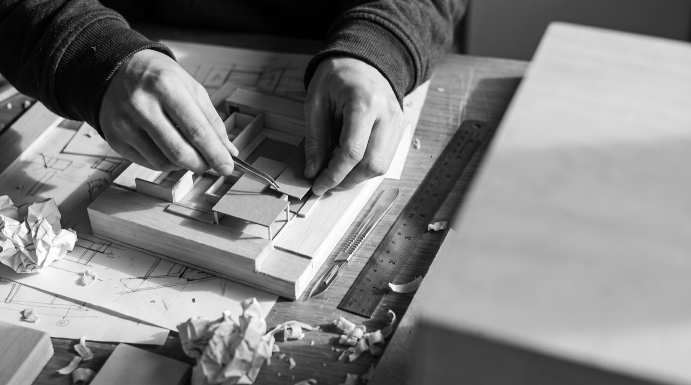
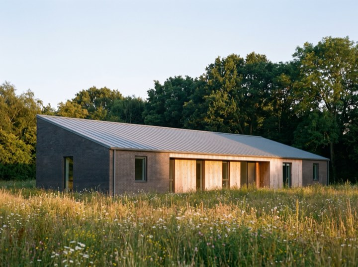
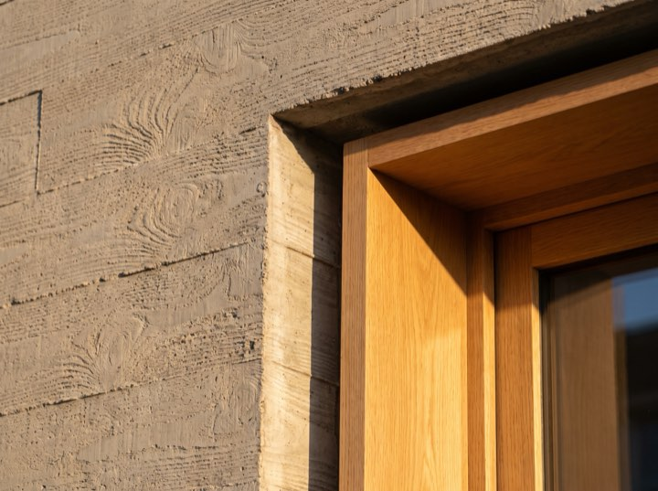
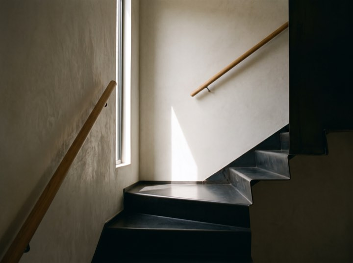
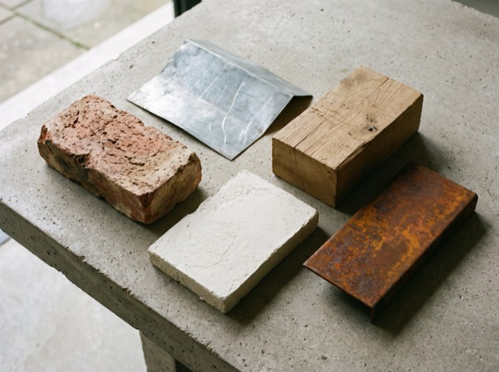
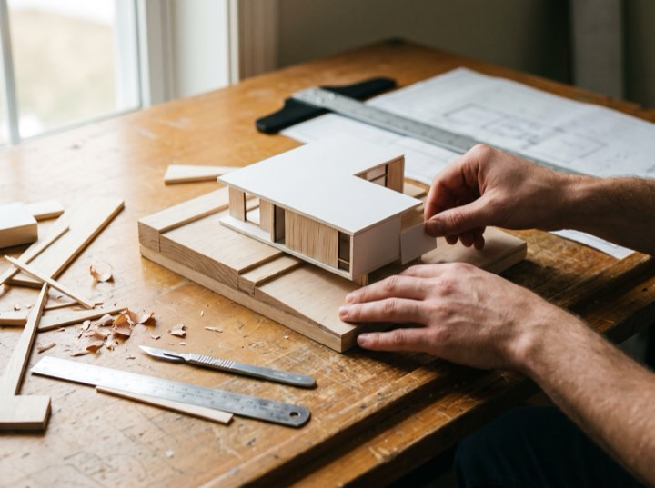
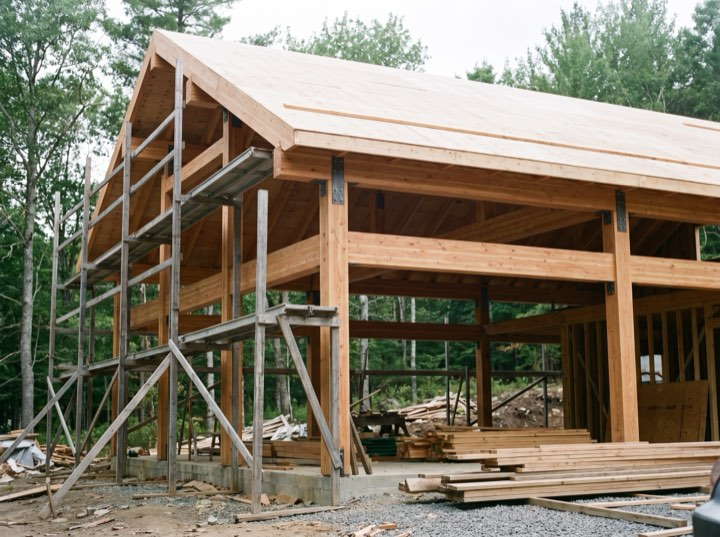

Private houses
New build and substantial renovation. Typically construction budgets from $900k, where the site or the brief has genuine difficulty in it.
A twelve-person studio working on houses, small cultural buildings and adaptive reuse. Restraint by disposition: the aim is a building that looks inevitable rather than one that looks designed.

Roughly eight projects at a time. We are not the cheapest and we are honest about that early.
New build and substantial renovation. Typically construction budgets from $900k, where the site or the brief has genuine difficulty in it.
Industrial, agricultural and civic buildings given a second life. The constraint is the interesting part and usually the reason it works.
Small galleries, libraries and community buildings, including competition work and public procurement.
Before you buy a site or commit to a scheme. A short, paid piece of work that regularly saves people a great deal.
“We interviewed five practices. Ansel were the only ones who asked what we were afraid of rather than what we wanted. The house we ended up with is nothing like what we described and exactly what we needed.”
Ingrid & Tomas H. Private house, coastal siteFive stages, and we stay through the last one, which is where most of the risk actually sits.
A short paid study: what the site allows, what it will cost, and whether the idea survives contact with reality.
Two or three genuinely different directions rather than one refined proposal. You choose a direction, not a drawing.
Resolved with engineers and costed properly. Permitting runs from here, and we handle it.
Tender, contractor selection and site administration through to completion. We do not hand over drawings and disappear.
Built work
Six projects, photographed once each and left alone. The thinking is on the drawings; this is what it built.






A first conversation is free and often clarifies more than people expect. If it isn't a project for us we will say so and suggest who it is for.
Enquiries for 2027 now open. Feasibility studies available as standalone work.